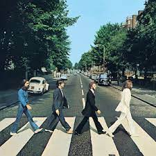
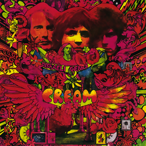
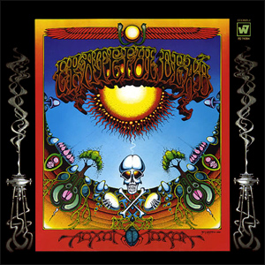

About
Background Info
I'm a computer science student at Dalhousie University. I moved from Toronto to Halifax about 3 years ago. For most of my life before that, I wasn't really a good student. I always procrastinated and came late to class, but midway through Grade 12, I became inspired to turn things around. After failing my Grade 11 English class and being a C student throughout high school, I decided to drop out so that I could come back the next year to try and do better. A lot of my teachers were skeptical, but I felt that if I truly applied myself, I would be able to get good grades.
Then COVID happened.
This really messed up my plans, and I didn't know what to do. I didn't want to come back the next year and take all my courses online. My dad and I eventually decided to move to Halifax where, conveniently, the high schools were still offering in-person education. When September came around, I buckled down and made sure to stay on top of my deadlines. I was determined to get into the engineering program at Dal, despite having a mark of 50 for Grade 12 math and never having taken Grade 11 chemistry. I had none of the prerequisites for any of my programs of choice, except a 75 in English (which I barely managed to pull off). It was a really hard semester. I failed my first calculus test. Nevertheless, I stuck to the plan.
Then June arrived and I got my report card. I ended up with a 95 in calculus, a 93 in chemistry, and an 80 in physics. I had never felt so accomplished in my whole life, and I got accepted into Dal's engineering, computer science, and finance programs. I chose computer science because of my love for math (also not a big fan of chemistry).
"Success is no accident. It is hard work, perseverance, learning, studying, sacrifce, and most of all, love of what you are doing or learning to do."
- Pele
What Now?
These days, I'm a full-time university student taking web development, computer systems, and calculus 1. I live in residence at Risley Hall, and I love the immersive experience. There have been times when I've gone weeks without leaving campus because everything I need is right here.
My Classes:
| Class | Computer Programming | Discrete Math | Calculus 1 | Web Development | Computer Systems |
|---|---|---|---|---|---|
| Prof. | Dr. Eric Poitras | Dr. Angela Siegel | Dr. Alan Surovell | Dr. Rina Wehbe | Dr. Corey Degagne |
| Grade | A+ | A |
|
||
| Class | Prof. | Grade |
|---|---|---|
| Computer Programming | Dr. Eric Poitras | A+ |
| Discrete Math | Dr. Angela Siegel | A |
| Calculus 1 | Dr. Alan Surovell | N/A |
| Web Development | Dr. Rina Wehbe | |
| Computer Systems | Dr. Corey Degagne |
My Study Music:
-
Dark Side of the Moon

-
Electric Ladyland

- Abbey Road 
- Disraeli Gears 
- Aoxomoxoa 
My Study Music: